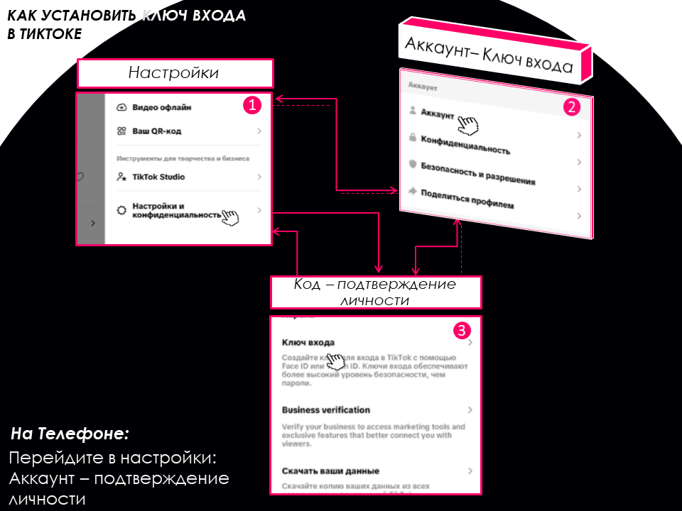
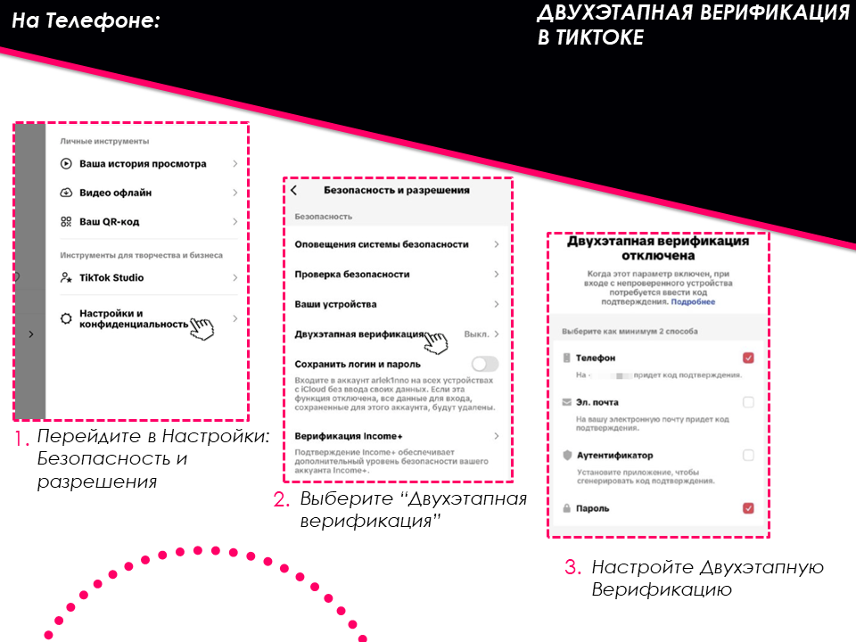
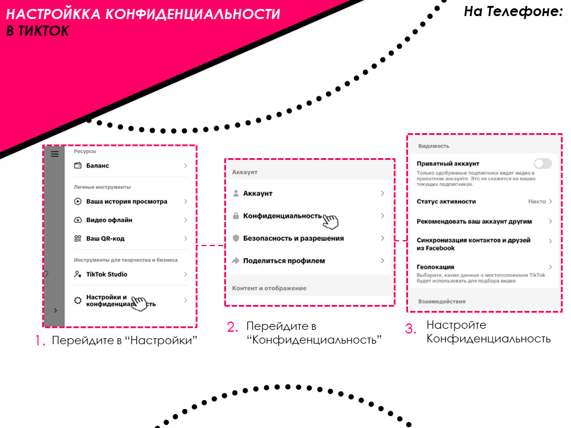
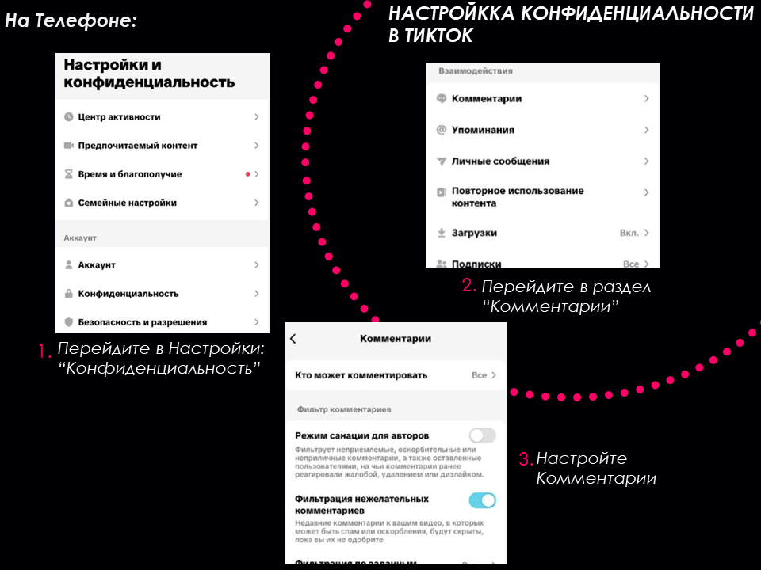
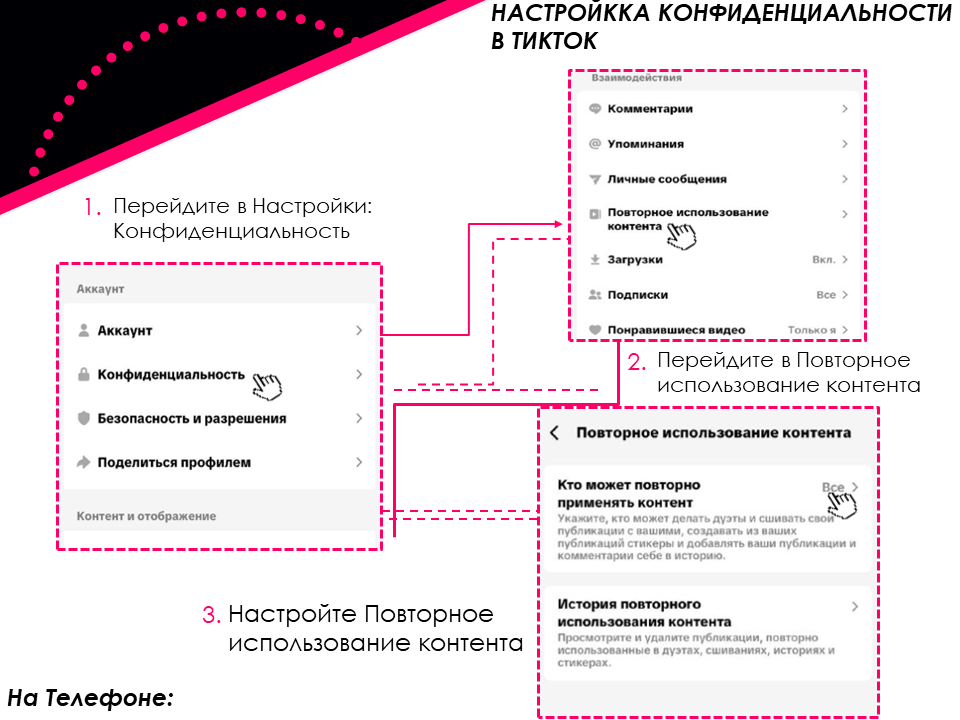
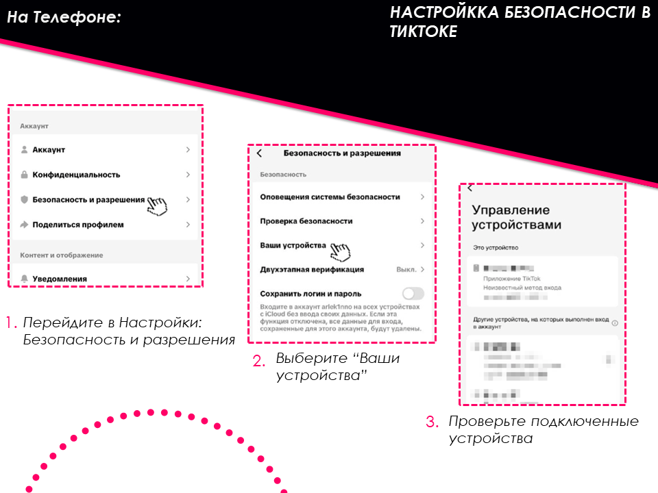

🎵 TikTok
Защитите аккаунт за 4 шага
Следуйте инструкции. На каждом шаге — текст и скриншоты.
1
Шаг 1 из 4
Установите надёжный ключ входа
Создайте сложный пароль с буквами, цифрами и символами.
Совет
Познакомиться с правилами сильного пароля можно во вкладке Тестер пароля.
→ Профиль → настройки и конфиденциальность → Аккаунт → Ключ входа

2
Шаг 2 из 4
Включите двухфакторную аутентификацию (2FA)
Добавляет дополнительный уровень защиты. Без кода из SMS никто не войдёт.
→ Настройки → Двухфакторная аутентификация

3
Шаг 3 из 4
Настройте приватность аккаунта
Сделайте аккаунт закрытым, если хотите контролировать, кто видит ваши видео.
→ Настройки → Конфиденциальность → Закрытый аккаунт



4
Шаг 4 из 4
Проверьте активные сеансы
Убедитесь, что в списке только ваши устройства.
→ Настройки → Безопасность → Управление устройствами
